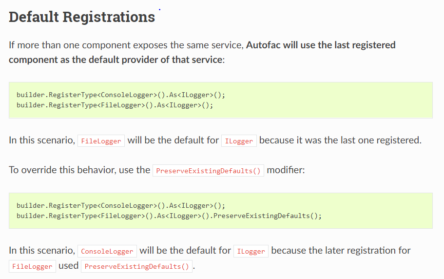

Autofac Introduction
Autofac is a general dependency injection framework, it can be used with asp.net, moq, ... Anywhere needs resolving dependencies.
Terms
1). service: interface
2). component: concrete implementation of a service.
3). container: the container that holds service-component pairs. It is used to register components, create scopes, resolve components, manage lifetime (creation & disposal).-
Dependencies registrations
Autofac uses Builder Patter to create containers. So before creating a container, first create a container builder. *** .Build() can only called once ***.
Dependencies can be registered as
1). Type:.RegisterType<DataBaseLogger>().As<ILogger>();" Pros: if this component also needs other components, autofac will automatically resolve them.
2). Instance: "RegisterInstance(formatter).As<IFormatter>();" Have to initialize the component instance manually, usually, the most basic services that do not depend on other services. Pros: It can have a long lifetime.
3). Expression: ".Register(c => new ConfigReader("mysection")).As<IConfigReader>();" Dynamic creation.If Autofac cannot resolve an component, it will throws "Cannot resolve parameter 'xxxx'"
* one component -> multi-services
* multi-components -> one service
* module registrationpublic interface IFormatter { string Format(string[] arr); } public interface IPersister { void Persist(string data); } public interface IFinalizer { void Finalize(string data); } public interface ILogger { void Log(params string [] data); } public class WhiteSpaceFormatter : IFormatter { public string Format(string[] arr) { if (arr == null) { return ""; } StringBuilder sb = new StringBuilder(); foreach (string i in arr) { sb.Append(i); sb.Append(" "); } return sb.ToString(); } } public class DatabasePersister: IPersister { public void Persist(string data) { Console.WriteLine($"To Database: {data}"); } } public class DataBaseLogger : ILogger { private readonly IPersister _persister; private readonly IFormatter _formatter; public DataBaseLogger(IPersister persister, IFormatter formatter) { _persister = persister; _formatter = formatter; } public void Log(params string[] data) { _persister.Persist(_formatter.Format(data)); } } public class Program { public static void Main(string[] args) { // Autofac uses Builder Patter. Create a container builder ContainerBuilder containerBuilder = new ContainerBuilder(); // dependencies can be registered as Type, Instance, or expression for dynamic creation. IFormatter formatter = new WhiteSpaceFormatter(); containerBuilder.RegisterInstance(formatter).As<IFormatter>(); containerBuilder.RegisterType<DatabasePersister>().As<IPersister>(); containerBuilder.RegisterType<DataBaseLogger>().As<ILogger>(); // database logger depends on IFormatter and IPersister, Autofac resolves them. IContainer container = containerBuilder.Build(); using (var scope = container.BeginLifetimeScope()) { ILogger logger = scope.Resolve<ILogger>(); logger.Log("Error", "Unexpected behavior"); } } } -
Dependencies registrations: multi-As
A component can be registered as multiple services. A component can even be registered to a service that it did not implememnt. And it does cause runtime error but not compile error.
containerBuilder.RegisterType<DatabasePersister>() .As<IPersister>() .AsSelf() // same as .As<DatabasePersister> .As<IFinalizer>(); // no compile error. -
Dependencies registrations: Default registrations

-
Dependencies registrations: Module reigstrations
Autofac registration can be organized as individual modules, and then selectable. Internall, it used reflection.
using Autofac; public class IPersisterModule: Module { protected override void Load(ContainerBuilder builder) { IFormatter formatter = new WhitespaceFormatter(); builder.RegisterInstance(formatter).As<IFormatter>(); builder.RegisterType<DataBaseLogger>().As<ILogger>(); } } /////////////////// using System.Reflection; using Autofac; public class Program { public static void Main(string[] args) { // .... Assembly assembly = typeof(IPersisterModule).Assembly; containerBuilder.RegisterAssemblyModules(assembly); IContainer container = containerBuilder.Build(); } } -
Lifetime scope
Lifetime scope means the lifetime of a reoslved component. It can have a lifetime as the Aufofac container, or a short lifetime of per
1). Instance Per Dependency (default) : a new component will be return per resolving.
public class DataBaseLogger : ILogger { private readonly IPersister _persister; private readonly IFormatter _formatter; public DataBaseLogger(IPersister persister, IFormatter formatter, IFormatter formatter2) { _persister = persister; _formatter = formatter; _formatter = formatter2; } public void Log(params string[] data) { _persister.Persist(_formatter.Format(data)); } }When resolving the above component, IFormatter service will be resolved twice (constructor called twice) even though they may be the same.
2). Instance Per Lifetime Scope: Lifetime scope is a container-created scope
using (var scope = container.BeginLifetimeScope()) { // scope: IScope // container: IContainer: IScope }The container itself has a root scope, so if directly resolving a "Per lifetime scope" component, it will have the same lifetime as the container. *** Because IContainer: IScope, it is feasible to do "container.Resolve"
Nested scope: nested scope does not affect the behavior of "InstancePerLifetimeScope".
public static void Main(string[] args) { ContainerBuilder containerBuilder = new ContainerBuilder(); containerBuilder.RegisterType<WhitespaceFormatter>().As<IFormatter>().InstancePerLifetimeScope(); containerBuilder.RegisterType<DataBaseLogger>().As<ILogger>().InstancePerLifetimeScope(); containerBuilder.RegisterType<DatabasePersister>().As<IPersister>().InstancePerLifetimeScope(); IContainer container = containerBuilder.Build(); using (var outterScope = container.BeginLifetimeScope()) { using (var innerScope = outterScope.BeginLifetimeScope()) { // nested scope: inner scope still initialize its own dependencies. ILogger innerlogger = innerScope.Resolve<ILogger>(); innerlogger.Log("Error", "Unexpected behavior"); } ILogger logger = outterScope.Resolve<ILogger>(); logger.Log("Error", "Unexpected behavior"); } }After using, Autofac will dispose the components created within the scope.
3). Instance Per Matching Lifetime Scope: This is same as InstancePerLifetimeScope, except
* It gives each service one or more groups. During resolving, only the specific lifetime scope can resolve them.
* Nested scope has the same tag as parent scope, moreover, it does not re-initialize these parent-scope initialized components anymore.containerBuilder.RegisterType<WhitespaceFormatter>().As<IFormatter>().InstancePerMatchingLifetimeScope("tag1, tag2"); containerBuilder.RegisterType<DataBaseLogger>().As<ILogger>().InstancePerMatchingLifetimeScope("tag1", "tag2"); containerBuilder.RegisterType<DatabasePersister>().As<IPersister>().InstancePerMatchingLifetimeScope("tag1"); // IFormatter and ILogger belongs to "tag1" and "tag2" // DatabasePersister belongs to "tag1" using (var scope = container.BeginLifetimeScope("tag1")){ // using "tag1" group, IFormatter formatter = scope.Resolve<IFormatter>(); using (var scope2 = scope.BeginLifetimeScope()) { // scope2 is also in "tag1" IFormatter formatter = scope.Resolve<IFormatter>(); // formatter is not re-initialized. } }Low level component should belong to a large set of group. Otherwise, high level component cannot be initialized.
** Moreover, we can use tags to solve the Multi-component One-service issue. For a service, the latest registration wins. It also override the "matching group" of pervious registerd component.
containerBuilder.RegisterType<WhitespaceFormatter>().As<IFormatter>().InstancePerMatchingLifetimeScope("tag1", "tag2"); containerBuilder.RegisterType<SemicolonFormatter>().As<IFormatter>().InstancePerMatchingLifetimeScope("tag1"); // the last wins, and the service's component is SemicolonFormatter, tag is "tag1".4). Single Instance: has a lifetime as the container. Only one instance per container.
Components registered as .RegisterInstance are single instance
5). Derived lifetime scope: thread scope & instance per request scope.
When integrating with Asp.Net webapi or Owin, we most likely should use .InstancePerRequest. It internally used .InstancePerMatchingLifetimeScope(MatchingScopeLifetimeTags.RequestLifetimeScopeTag).
public static IRegistrationBuilder<TLimit, TActivatorData, TStyle> InstancePerRequest<TLimit, TActivatorData, TStyle> ( this IRegistrationBuilder<TLimit, TActivatorData, TStyle> registration, params object[] lifetimeScopeTags ) { if (registration == null) throw new ArgumentNullException(nameof(registration)); var tags = new[] { MatchingScopeLifetimeTags.RequestLifetimeScopeTag }.Concat(lifetimeScopeTags).ToArray(); return registration.InstancePerMatchingLifetimeScope(tags); }
-
Resolving dependencies
1). Resolving by calling .Resolve method
2). Constructor resolving. A component may have multiple constructors, which one to use?